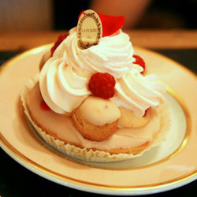
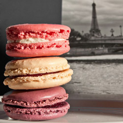
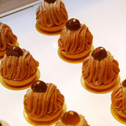

法式經典甜點
簡介
法國的飲食文化中，除了受人追捧的法國料理外，有著精緻的外表、及複雜製作過程的美味甜點也往往是大家所嚮往品嚐的。「法國甜點」歷史從中世紀簡樸的糕點開始，到19世紀受到皇室貴族的喜愛，至今已有千年的歷史。其間經過歷代糕點師傅不斷創新與改良，使得現今的法國糕點在國際上占有重要地位。
Saint-Honoré 聖多諾黑
Saint-Honoré 聖多諾黑（音譯）泡芙塔1846-1847 年之間在皇家宮殿 rue Saint-Honoré 有家甜點店「Chiboust」，店裡有個叫做 Auguste Jullien 甜點師父發明了這道甜點。雖然所有記載裡都沒清楚直接的說明為什麼這甜點叫做 「Saint-Honoré」，但跟甜點店的位置剛好就在和甜點之神同名的路上絕對有關，理所當然的就把甜點這樣命名了。Auguste Jullien 第一次是用小的軟甜麵包 brioche 圍在四周，中間則填上卡式達奶油餡，看起來就像是由珍珠裝飾的皇冠，但這種作法讓整個甜點變得太鬆軟。後來他離開但把這種甜點作了改良，他先做出乾酥的派底，然後在派底的周圍加上一圈泡芙餅皮，最後再放上一顆顆球狀的泡芙。但那時並沒有專利法保護，所以Chiboust 直接仿照 Auguste Jullien 的改良作法，然後換上他們自己另外研發的新式奶油餡。這種奶油餡是把卡式達奶油餡加進蛋白霜（meringue），後來就被稱作「希布斯特奶油餡」（crème Chiboust），或是「聖諾黑奶油餡」（crème Saint-Honoré）。
少女的酥胸馬卡龍
馬卡龍是最具有法國式浪漫色彩的甜點，其名字「少女的酥胸」就已經讓人產生無限遐想。 馬卡龍最初的配方追述到義大利文藝復興時期（Macaron來自義大利語，杏仁麵粉團）。 1533年，美第奇家族的凱薩琳（後來的奧爾良公爵夫人）將馬卡龍帶入凡爾賽宮。但馬卡龍最初的版本只是普通的杏仁蛋白餅，沒有內陷兒。直到後來對馬卡龍有著劃時代意義的巴黎甜點師Lauduree出現，他在簡單的杏仁蛋白餅中加入奶油餡和果醬，色彩繽紛的馬卡龍便開始一發不可收拾。 在電影《絕代艷后》中，導演索菲亞科波拉打造了一個馬卡龍色的凡爾賽宮，宛若一個夢幻的洛可可花園。 這部電影給了人們許多關於馬卡龍和瑪麗安托瓦內特的認知——當他們說「瑪麗安托瓦內特式的」指的往往就是「馬卡龍式的」。 Laduree是馬卡龍最著名的品牌，如果你沒吃過Laduree，可千萬不要輕易評價馬卡龍。因為這是一款失敗率極高的甜點，其「酥」就來自與對製作和存放過程中溫度和濕度的嚴格控制，所以一般的甜點店做不出好吃的馬卡龍再正常不過了。 從Laduree分支出來的Pierre Herme品牌則青出於藍，被譽為馬卡龍中的愛馬仕。 另外還有一個大家可能不太熟悉的是法國老牌Dalloyau Dalloyau是十九世紀專貢宮廷甜品的膳食官民，他的子孫以他名字成立的Dalloyau也是法國最具代表性的馬卡龍甜品屋。
Montblanc 蒙布朗
勃朗峰栗子蛋糕起源於邊境相鄰的法國薩瓦和義大利皮埃蒙特，名稱來自於與其神似的阿爾卑斯山勃朗峰。法國的勃朗峰蛋糕基本和義大利的差不多，區別在於頂端的栗子奶油上。 而首個將其加入主要糕點行列的咖啡館，則是創業於1907年的巴黎咖啡館「Angelina」（安吉莉娜）。 義大利的勃朗峰蛋糕是做成杯形糕餅模樣的海綿蛋糕和蛋白酥皮餡餅，上面還裝飾著細面造型或圓錐造型的栗子奶油，以及代表了積雪的細砂糖。 閃電泡芙（Eclair） 閃電泡芙是法國每家甜品店都會有的點心，傳說奶油和蛋糕結婚了，便有了奶油蛋糕，麵包從此失戀了，它把對奶油的愛深深藏進了心底，於是有了泡芙。泡芙塔是法國傳統的慶祝甜點，象徵著幸福的泡芙被一個一個累積起來，高高的泡芙塔就是人們對滿滿的幸福的憧憬。